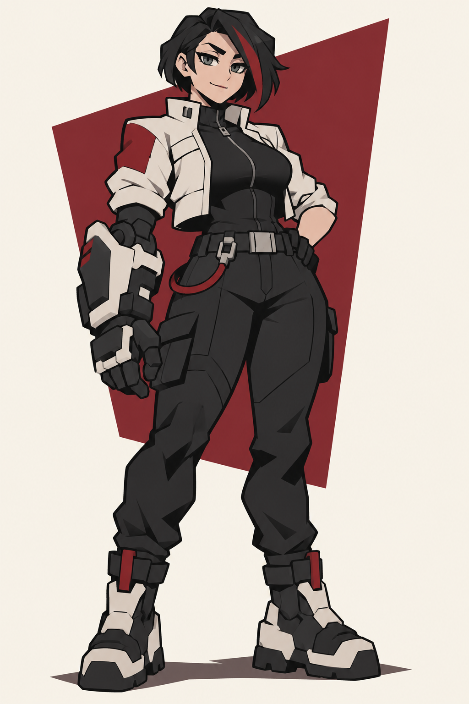
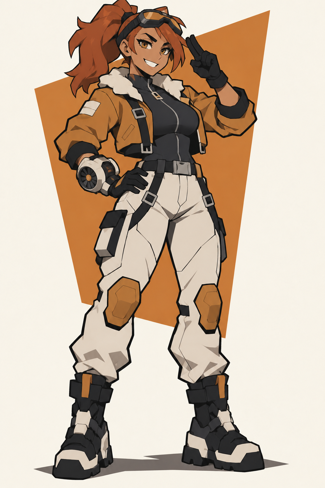
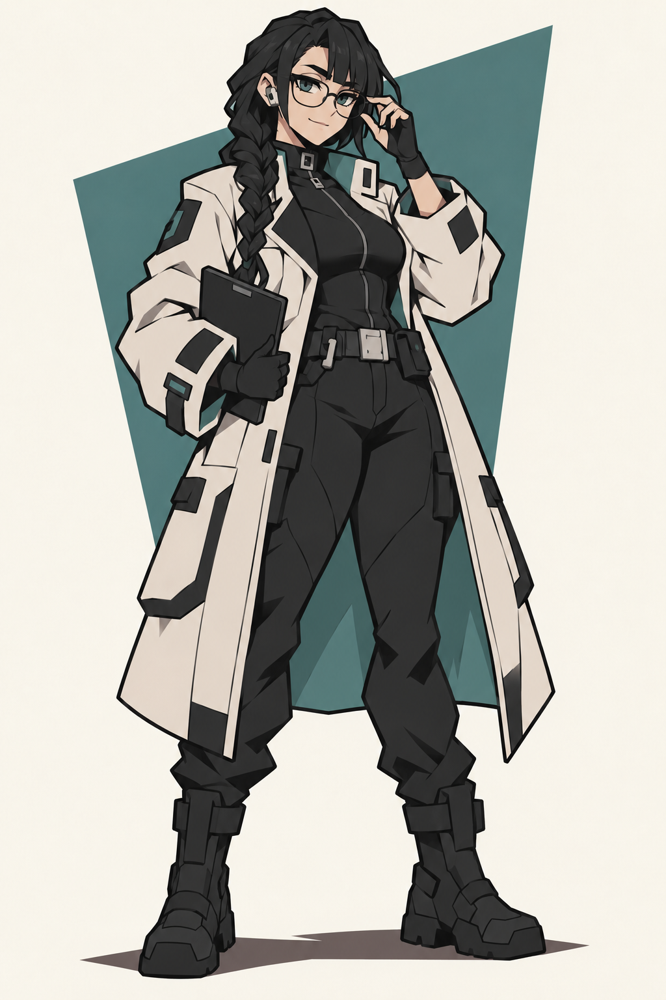
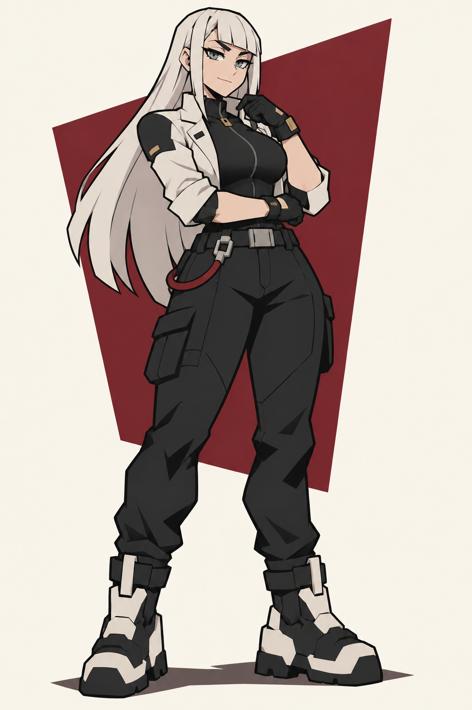
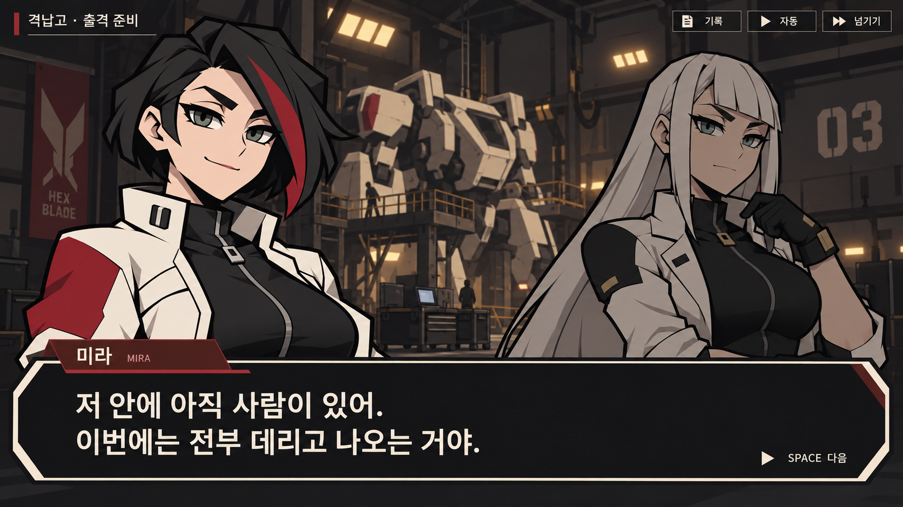

파일럿 캐릭터와 대화 포트레이트
새 캐릭터 3명 · 미라 포함 4명 × 표정 3종 · 임시 대화 UI 1장
이미지를 누르면 원본 PNG를 열 수 있습니다. 포트레이트 뒤 체크무늬는 투명 배경 확인용입니다.


중장기 파일럿 · 단발과 기계 장갑


고속기 파일럿 · 포니테일과 고글


통신 전문가 · 안경과 긴 땋은 머리


선임 에이스 · 긴 백발과 장교형 재킷
미라MIRA
중장기 파일럿 · 단발과 기계 장갑


세나SENA
고속기 파일럿 · 포니테일과 고글


노아NOA
통신 전문가 · 안경과 긴 땋은 머리


에이린EIRIN
선임 에이스 · 긴 백발과 장교형 재킷


격납고 대화 UI
미라가 말하고 에이린이 듣는 장면. 얼굴과 대사가 중심이 되는 배치를 검토합니다.
